← Industry Projects
UAL London College of Fashion · Innovative Communication Tactics · 2022
Launched 22/5/22 at 22:52 BST
Urban
Outfitters
× The Sims 4: 22/52
Gaming Collaboration
Brand Research
Consumer Analysis
Innovative Tactics
Digital Repositioning
The Brief
For the Innovative Communication Tactics module at UAL London College of Fashion, I selected Urban Outfitters as my brand and conducted a full research audit before developing and proposing a communication tactic that would reposition them as a digital lifestyle brand.
UO is a $3.9 billion lifestyle brand founded in Philadelphia in 1970 as 'The Free People's Store', and now part of the URBN portfolio alongside Anthropologie, Free People, Nuuly, Terrain and BHLDN. Despite 9.2 million Instagram followers and a strong TikTok presence, my research found the brand was significantly underperforming on engagement, failing to generate lifestyle press coverage, and carrying the weight of multiple high-profile controversies that had damaged trust among Gen-Z consumers.
My research included interviews and surveys with Urban Outfitters employees, UO consumers, competitor consumers, and gamers, including industry experts who had worked at EA Sports. These findings led me to a tactic no fashion brand had executed quite like this: a full gaming collaboration with The Sims 4, called 22/52.
Brand Audit
Understanding Urban Outfitters
I began with a full internal audit: brand history, sub-lines (UO Home, UO Men's, UO Women, UO Music, UO Beauty, Iets Frans), CSR initiatives (UOCC Community Cares), key internal stakeholders, and a brand timeline from the first Philadelphia store in 1970 to their 2021 web3 NFT drop with Smiley and Andre Saraiva.
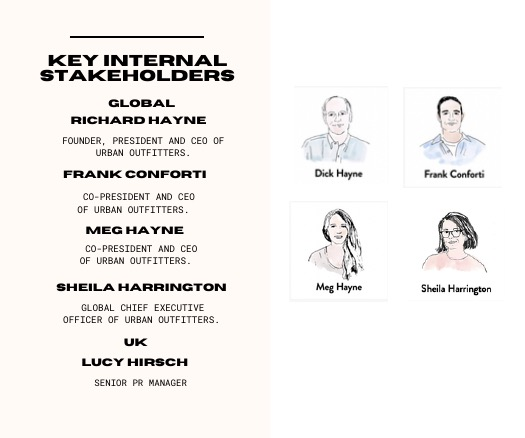
Core values: Indie, 70's Inspired, Boho-Chic, Community, Quirky, Pop Culture, TikTok Trendy, Reworked Vintage
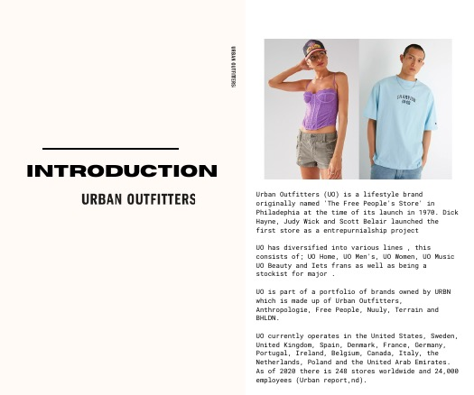
Brand introduction: 248 stores worldwide, 24,000 employees, URBN portfolio, sub-line diversification
Issues
Controversies & The Communications Gap
My research identified a pattern of culturally insensitive product decisions, including a Kent State sweatshirt, a Yellow Star of David shirt, a 'Ghettopoly' board game, a transphobic greeting card, and the illegal use of the Navajo Nation's name (settled in 2016), alongside a significant press coverage gap. Despite being a major high street retailer, UO's coverage appeared almost entirely in business and financial publications such as Forbes, with no presence in i-D, Dazed, or other lifestyle titles that Gen-Z actually reads. On TikTok, the brand mostly reposted consumer content rather than creating its own, driving poor engagement ratios across all platforms.
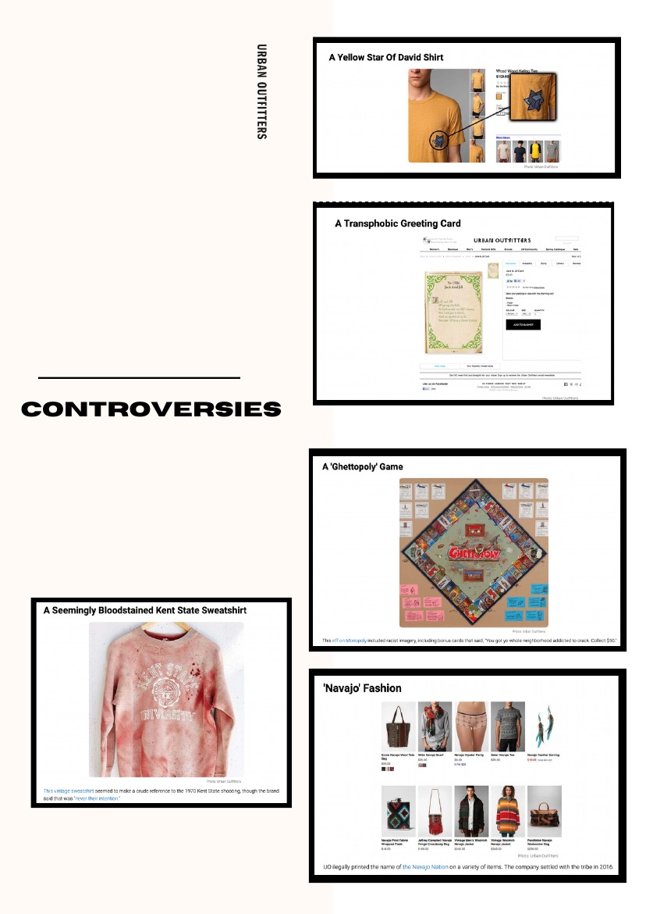
Controversies mapped: cultural appropriation, insensitive products, negative press coverage driving consumer boycotts
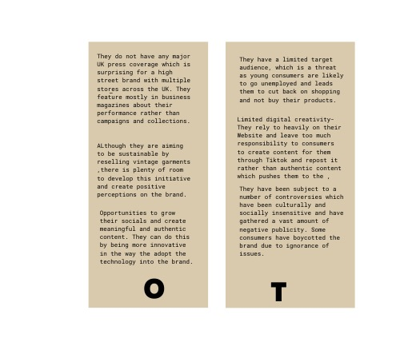
Current communications: Instagram (9.2M), TikTok (114.3k), Twitter (3.0M), Pinterest (32M), high following, poor engagement
Consumer Research
Estelle's Work
Primary Research
I ran an Instagram poll asking "Who shops at Urban Outfitters?" and contacted the 51% of respondents who answered yes to form a focus group. I also surveyed and interviewed UO employees, competitor consumers, and gamers including Libby Bonsetten (ex-EA Sports graphic designer, 13 years gaming) and Nathan Woodley (Sims 4 gamer, 4 years). Key findings: 67.6% of UO consumers play video games; 60% of Sims 4 players are women aged 18–24; the brand's core values align closely with the community-driven nature of gaming.
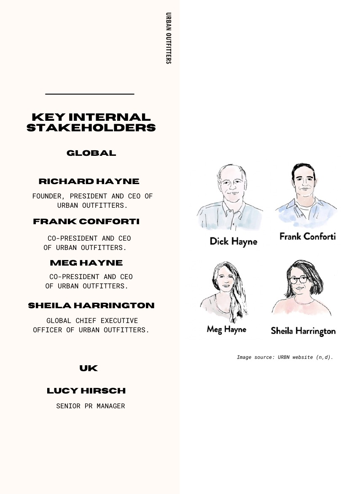
Target female consumer: Savannah Jacobs, 19, London. Law student and part-time waitress. TikTok, BeReal, Depop, Dazed. Ambitious, quirky, environmentally conscious.
What consumers like about UO
- "Their aesthetic hits different", Poxon (2022)
- "Clothes are on-trend and different from other high street stores", Kirkby (2022)
- "The way the customers are part of a community", Rebecca (2022)
What they would change
- "The price and clothes should be more size inclusive", Kirkby (2022)
- "The diversity and inclusion is a major problem", Hamblet (2022)
- "Their sustainability and quality of clothes", Drain (2022)
Sector Opportunity
Fashion in the Gaming Industry
The gaming industry generated $155 billion in revenue in 2020, with analysts predicting more than $260 billion by 2025. Moschino and Gucci had already collaborated with The Sims 4; Balenciaga had partnered with Fortnite. The Sims 4, with 36 million players worldwide and $462 million in annual revenue, had collaborated with high fashion but not with an accessible lifestyle brand. As a Sims gamer myself, I identified a gap: the game's community-driven, identity-first ethos was a near-perfect match for UO's stated values, but UO hadn't tapped it.
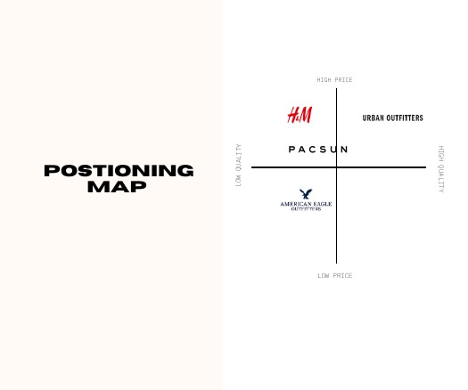
Fashion x Gaming: Moschino x Sims 4, Balenciaga x Fortnite, gaming industry projected to exceed $260bn by 2025
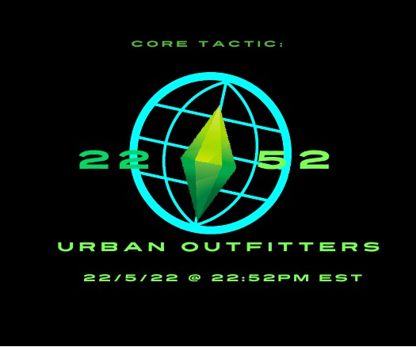
The Sims 4: 36 million players, $462M annual revenue, previously collaborated with Moschino and Gucci. 60% of players are women aged 18–24.
The Core Tactic
22/52
Urban Outfitters
× The Sims 4
22/52 is a gaming expansion pack collaboration between Urban Outfitters and The Sims 4. The name is drawn from two milestones: the 22nd year of The Sims franchise and the 52nd year of Urban Outfitters, both arriving in 2022.
The pack launched on 22/5/22 at 22:52 BST on Origin and all gaming consoles. It features over 100 body types, downloadable content from all 10 UO lines, and was designed to directly address consumer criticisms around diversity, inclusion and sustainability within the brand.
The Game: Sims 4 expansion pack with UO content, 100+ body types, all 10 UO lines
Billboards: OOH campaign to drive awareness pre-launch
TikTok Filter: Interactive AR filter to generate organic social content
Objectives
Estelle's Work
Tactic Aims & Objectives
The full campaign ran across four months with three deliverables: the game expansion, billboard advertising, and a TikTok filter. The launch strategy leveraged both the gaming community's existing interest in UO (67.6% of UO consumers already play games) and the tactic's novelty as the first lifestyle fashion brand to enter The Sims 4.
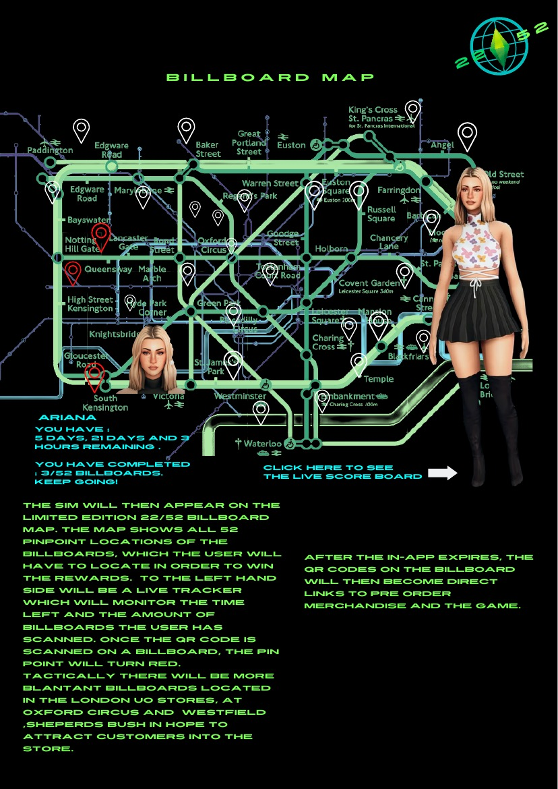
Aim 1: Diversify and reposition UO as a digital lifestyle brand. Generate 20% increase in media coverage in fashion, lifestyle and technology publications.
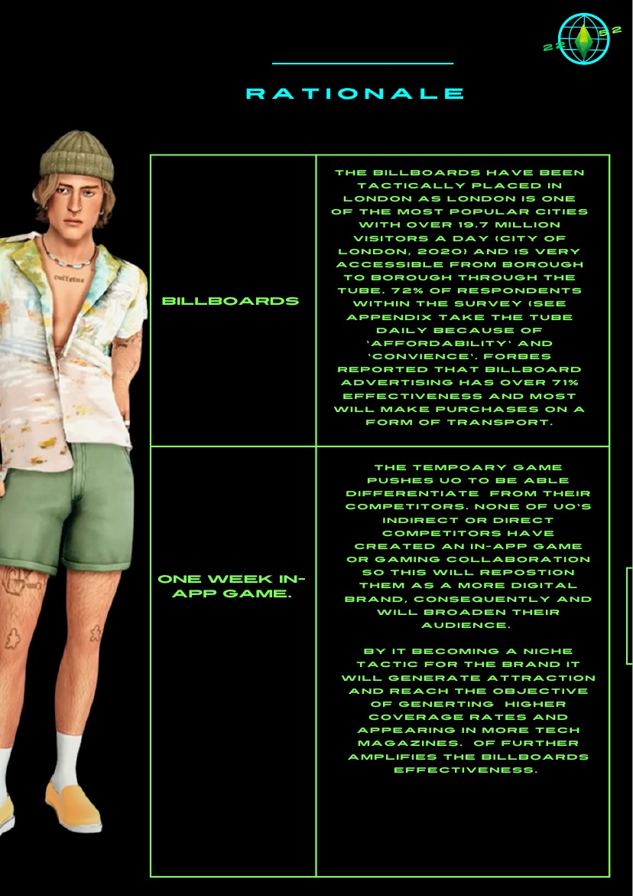
Tactic overview: 22/52 targets diversity, inclusion and sustainability gaps. 60% of Sims players are women aged 18–24, exactly UO's target demographic.
Objective 1
Generate a 20% increase in media coverage, specifically in fashion, lifestyle and technology publications
Objective 2
Increase engagement and followers via creative Instagram and TikTok content among Gen-Z by 50% over 12 months
Tactical Outcome
Estelle's Work
The Game, Built
The tactical outcome document shows the 22/52 game fully realised: final box art, in-game screens, and the custom world. Every screen was designed by Estelle, from the loading sequence to the eco-town of Philahealthier Green.
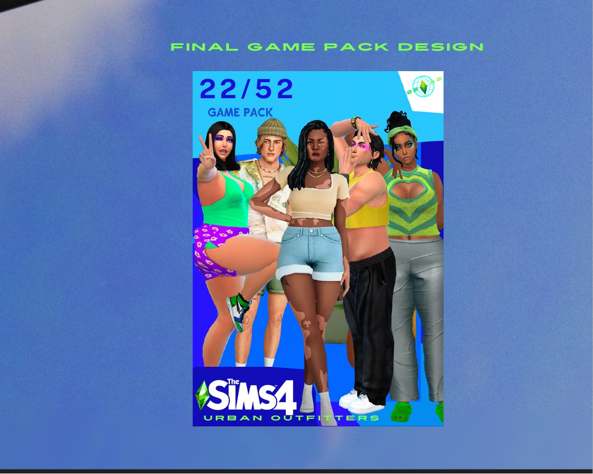
Final Game Pack Design: diverse characters in UO outfits, featuring multiple body types, skin tones, and styles
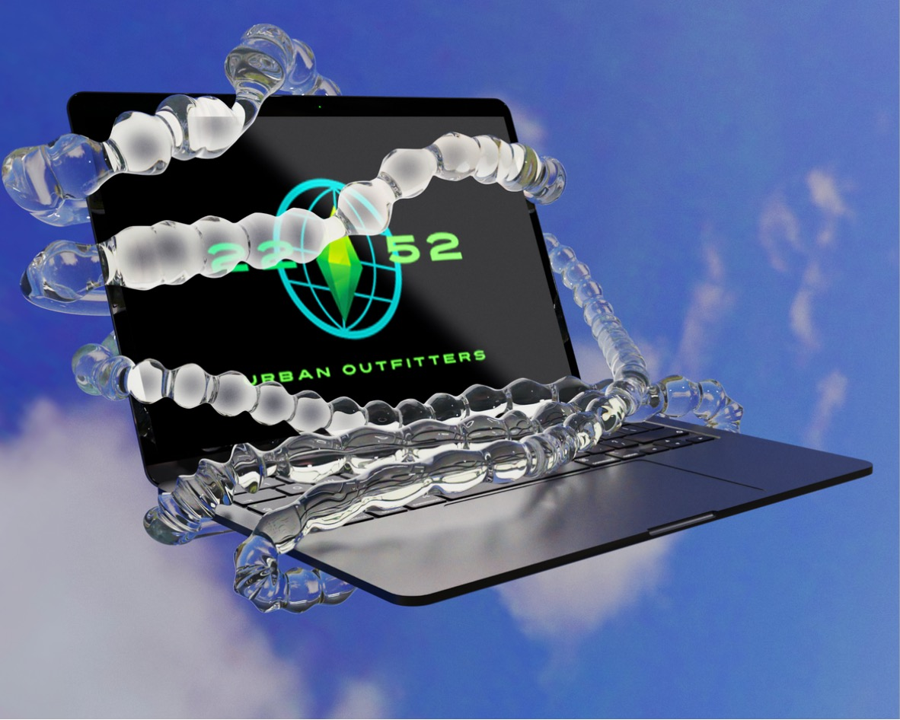
22/52 branding: the Sims plumbob within a globe, built as UO's identity within the gaming world
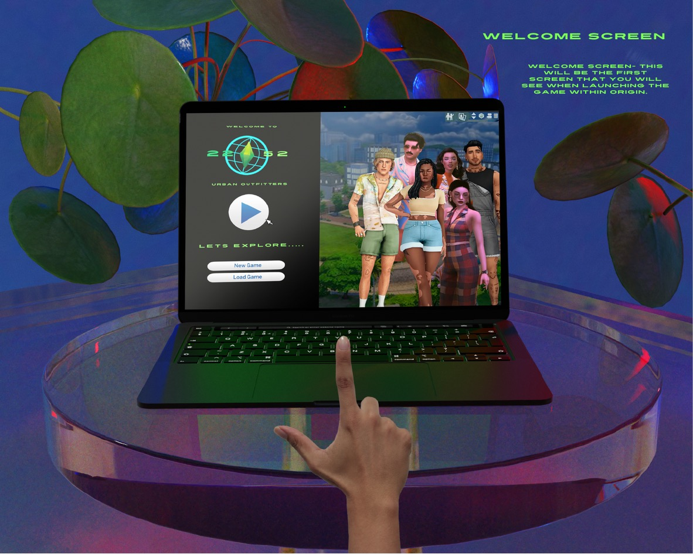
Welcome Screen: the first screen players see on Origin. "LETS EXPLORE....." with diverse Sims characters in UO clothing.
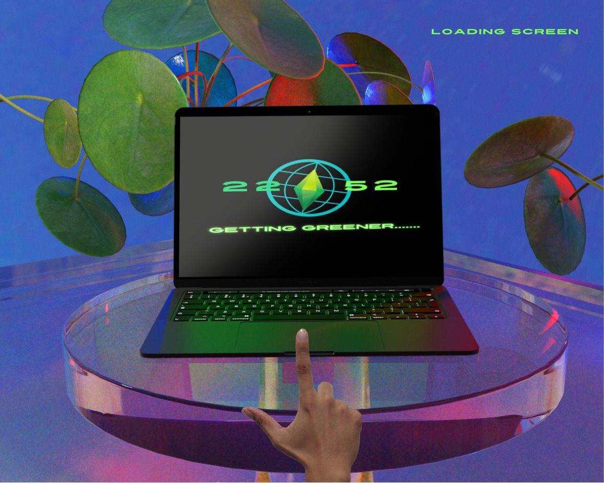
Loading Screen: "GETTING GREENER......", the sustainability message embedded into the game mechanics.
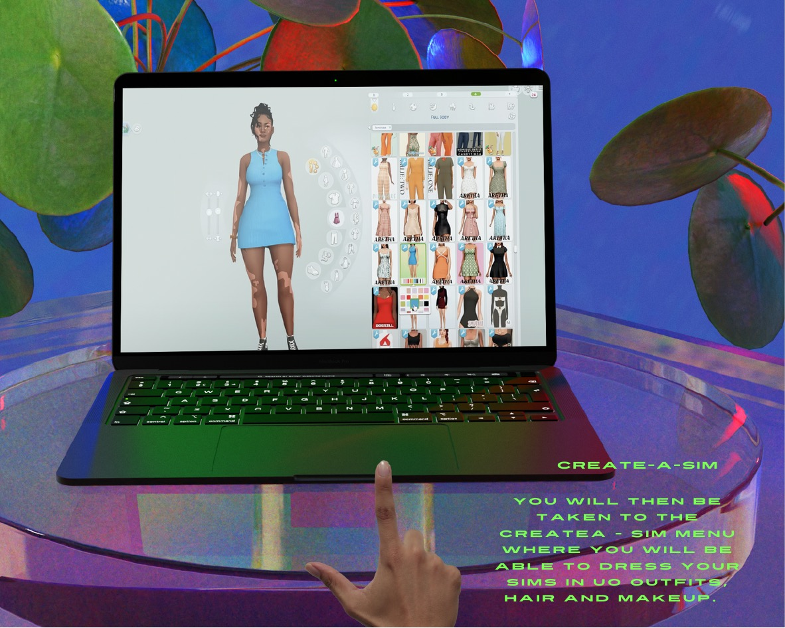
Create-A-Sim: players dress their Sims in the full UO FW21 collection, outfits, hair and makeup all from the UO range.
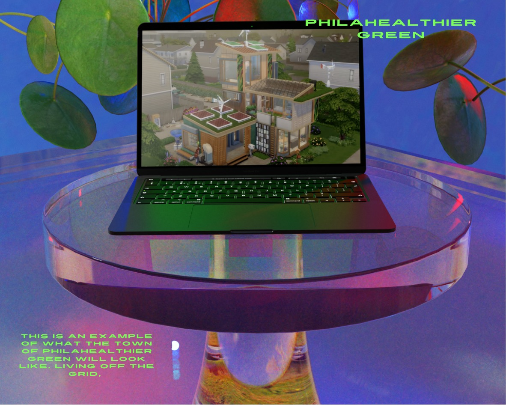
Philahealthier Green: the custom 22/52 game world, designed around living off the grid and sustainability.
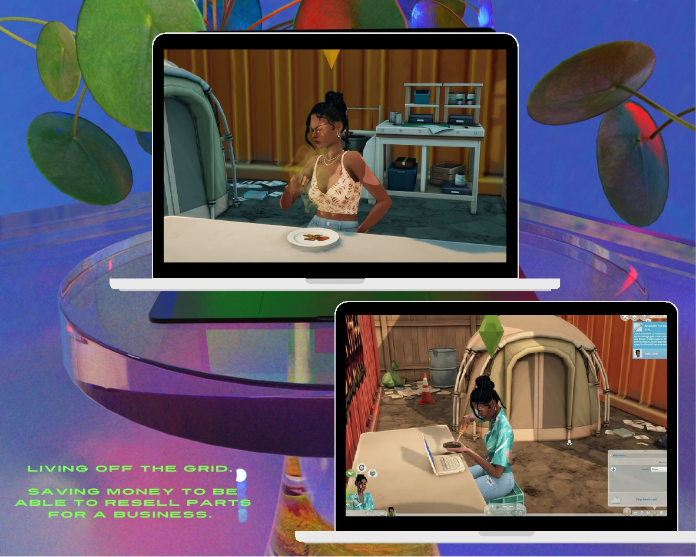
Gameplay: "Living off the grid. Saving money to be able to resell parts for a business." The game narrative addresses sustainability and entrepreneurship directly.
OOH Campaign
Estelle's Work
The Billboard Hunt
The out-of-home component of the campaign mapped 22/52 billboards across London using a custom tube map. Each billboard displayed a QR code — when scanned, its pinpoint on the map turns red, tracking the user's progress. A live sidebar monitors time remaining and billboards found, turning the campaign into an interactive city-wide hunt. Billboards were strategically placed near high-footfall locations including Westfield Shepherds Bush, New York store locations, and across key London zones, designed to draw both discovery and footfall into store.
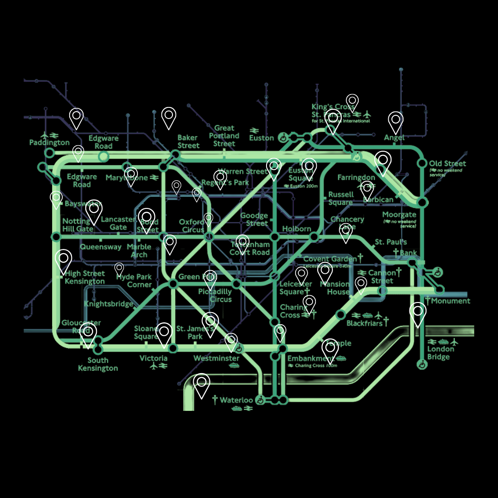
Pin locations across the London tube network. Scanning a billboard QR code turns its pin red on the live map.
How it works
- Map shows all billboard pin locations across London
- User locates a billboard and scans the QR code
- Scanned pin turns red on the live tracker
- Live sidebar tracks time left and billboards found
- Rewards unlocked on completion
Key Locations
- Westfield Shepherds Bush, near the UO store
- Oxford Circus, high-footfall central London
- Across key London zones throughout the tube network
Next Project
Supriya Lele, 360° Campaign
→